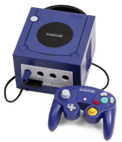
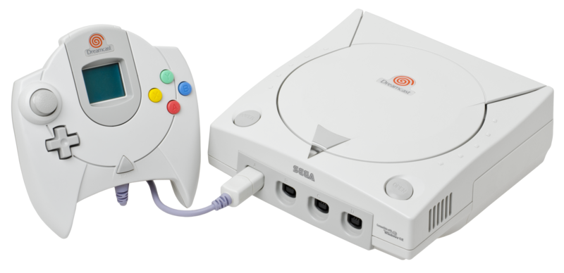
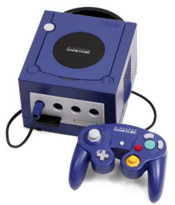
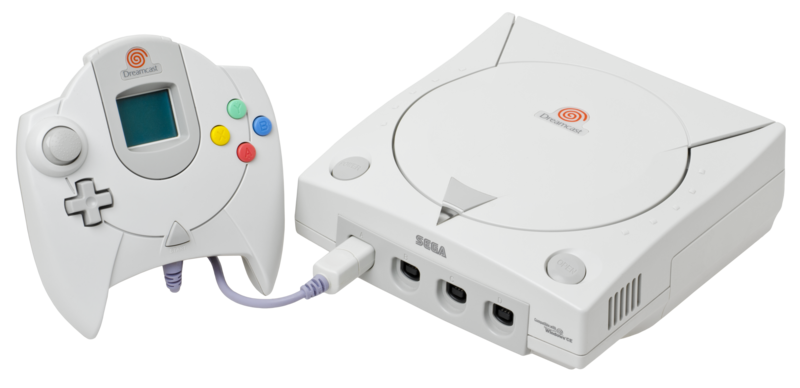
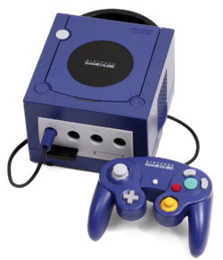
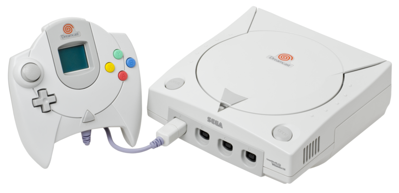

En 2001 Nintendo est concurrencée par la Dreamcast de Sega, La PlayStation 2 de Sony et la Xbox de Microsoft, toutes des consoles 3D … C’est pour cela que Nintendo sort … La GameCube (autrefois nommée Dolphin (oui, Nintendo aime changer les noms de ses consoles (il y a trop de parenthèses je sais))). On retrouve sur cette console des nouveaux jeux avec des graphismes bien meilleurs comme Smash Bros Mêlée, Mario Sunshine, The Wind Waker et un autre Mario kart encore.


Les personnes derrière le processeur de cette console ne sont rien d’autre que IBM, les créateurs de l’IBM 305 RAMAC

 


